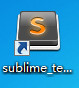

sublime text3的安装步骤如下，
打开后按照默认的选项一直点击“next”
直到出现“finish”单机完成。
package control的安装如下图所示，点击preferences里的package control，出现如下图所示的图片
emmet的安装如下图所示，
点击preferences里的package tontrol ,
再输入intal 然后再按回车键后接着输入emmet 再按回车键。
便算安装完成
重启后sublime text就已安装好

感谢您的观看！